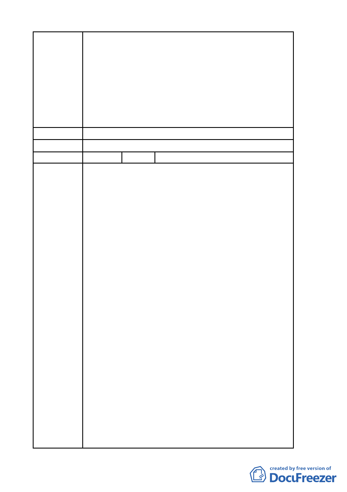

難以估計。
三、陳情人等再次表明立場如下：
（一）陳情人等願支持市府政策並依市府認可方案設計規
劃、施工。
（二)現將已形成共識之「金泰段臺北好好看開發案」與尚
待縝密檢討之「大灣北段通檢計畫」脫鉤並從速審查。
（三）北市都規字第 09836521507 號函認可之都市變更計
畫中所提99年3月31日前取得建照事，囿於現今情事
實無法達成，陳請 鈞局予以取消設限。
建 議 辦 法 （同上）
委 員 會 決 議 所提建議業已錄案供委員審議參考。
編 號 5 陳情人 奇泰建設有限公司等 6 家
一、有關「金泰段臺北好好看開發案」陳情人等已悉依臺
北市政府都市發展局(以下簡稱「都發局」) 都市計
畫委員會「修正臺北市「基隆河 ( 中山橋至成美橋
段 ) 附近地區土地使用分區與都市設計管制要點」
(北段地區)計畫案」第594次大會及2次座談會討論結
果 ， 並 配 合 都 發 局 98 年 9 月 14 日 北 市 都 規 字 第
098352214500 號函檢附之土地使用管制要點草案，
於98年9月21日前提送變更都市計畫書，依法申請續
行都市計畫之法定程序。
二、依98年10月30日北市都規字第09836521507號函規定
表訂規範內容、格式，於民國98年11月3日送請臺北
市都市計畫委員會(以下簡稱「都委會」) 辦理公展
在案、俟後獲臺北政府府都規字第09838862600號函
陳情理由
於98年12月23日至99年1月22日公展完成。
三、陳情人等依前揭相關草案(98年9月10日建議方案，如
附表)設計規劃，且皆已完成環境影響評估審查作
業，俟都市計畫公告後即可申請核備。
四、然幾經折衝，眼見已近完成整合階段，難料99年5月
19日第二次專案審查會議，與前揭諸多會議結論不一
致，又將議題回至討論原點，分列說明如下：
(一)臺北市「基隆河(中山橋至成美橋段)附近地區土地使
用分區與都市設計管制要點」(北段地區)計畫案(下
稱「大灣北段通檢計畫」)，配合社經情勢變更已屆
通盤檢討，本有其必要性。
(二)本地區「金泰段臺北好好看開發案」、「大灣北段通
檢計畫」，是否併審或分審？主軸審議原則反覆，致
審查進程裹足不前。如認二案應與分審，亦無將「金
- 53 -